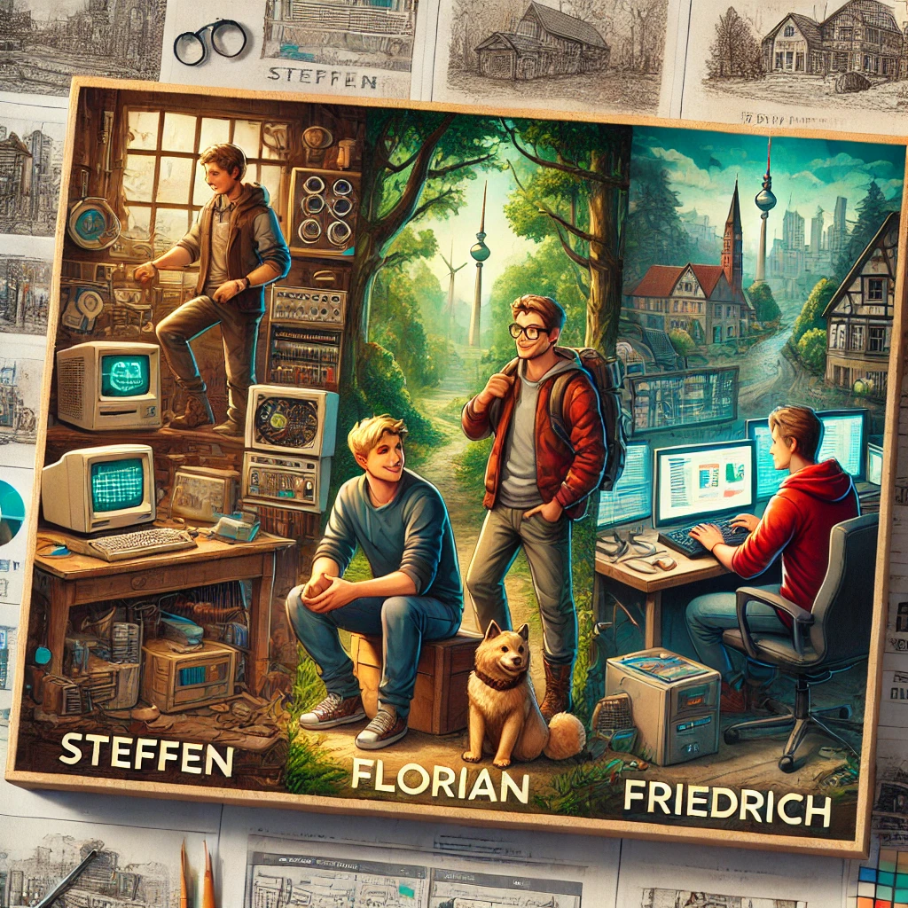

In the forests of Lausitz, Steffen spent his days tinkering with old computers in his uncle’s workshop. Code felt like solving puzzles with infinite answers, and he loved every challenge.
In a small village in Brandenburg, Florian sketched website designs on scraps of paper, dreaming of bringing ideas to life on a screen.
In the heart of Berlin, Friedrich thrived on the city’s energy. He dreamed of building apps that people couldn’t live without.
They met at 42 Berlin, where their shared passion for software development turned into friendship. Together, they built a webserver app for their final project. Steffen handled the backend, Florian crafted the design, and Friedrich integrated the frontend.
Their webserver launched quietly but grew quickly, connecting people across their regions. Late nights, debugging sessions, and laughter bound them together.
“We did it,” Steffen said.
“And we’re just getting started,” Friedrich replied.
Florian smiled. “From three places, one idea.”
They weren’t just developers. They were builders of connections, tied by friendship and code.
